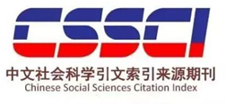

乌丙安教授在访谈中,通过生动的案例,回顾了其在民间信仰研究中提出"俗信"概念的背景和过程,论证了民间俗信存在的合理性。在民间信仰类项目申遗过程中,"俗信"的转化运用促成了"妈祖信俗"等民间信仰项目的成功申遗,同时也增强了"非遗"保护中"社区"的主体作用。"妈祖信俗"申遗不仅对于妈祖信仰本身、而且也给其他民间信俗类遗产项目的保护产生了积极的影响。

乌丙安（1929-2020），辽宁大学教授，中国民俗学学科奠基人之一，长期致力于中国民俗学理论与实践研究，著有《中国民俗学》《民俗学丛话》等。